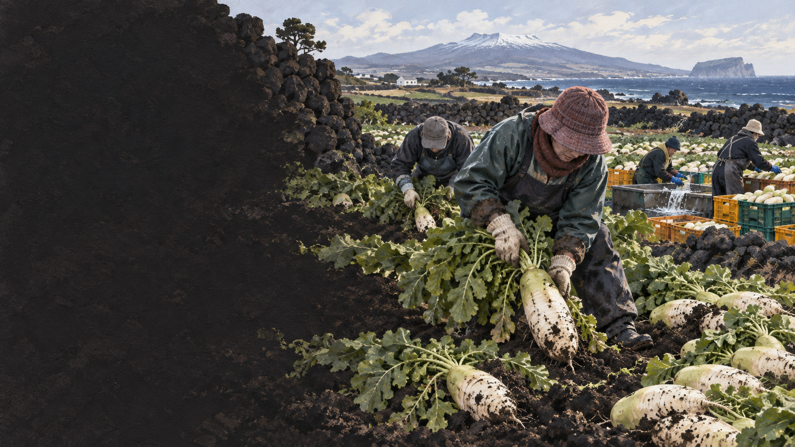

제주식 무국
두툼하게 썬 무가 국물에 시원한 단맛을 냅니다.
 제주에서는 이 재료를
제주에서는 이 재료를
월동무의 생활문화를 바탕으로 제작한 기록화 · 생성 이미지
제주의 비교적 온화한 겨울과 넓은 노지 밭은 무를 밭에서 겨울나게 합니다. 가을에 파종해 겨울부터 이듬해 봄까지 수확하는 동안 낮은 온도에 적응하며 당류가 축적되어 단맛이 또렷해질 수 있습니다.
추위만으로 맛을 설명할 수는 없습니다. 품종, 토양 수분, 재배와 수확 시기, 저장 조건도 단맛과 조직감에 영향을 줍니다. 제주 월동무의 맛은 기후와 농가의 관리가 함께 만든 결과입니다.
월동무는 밭에 오래 머무는 작물입니다. 바람과 비, 추위를 견딘 뒤 수확·세척·선별을 거쳐 전국으로 이동합니다.
여름 끝과 가을 무렵 밭을 만들고 씨를 뿌립니다.
제주 겨울의 바람과 비를 맞으며 뿌리가 굵어집니다.
크기와 시장, 기상 상황을 보며 밭에서 뽑습니다.
흙을 씻고 상처·크기·모양에 따라 나눕니다.
신선 유통과 절임·건조·가공으로 갈라집니다.
맑은 무국과 무나물, 말려 두는 무말랭이뿐 아니라 빙떡 속의 삶은 무채도 월동무의 단맛과 수분을 활용하는 방식입니다.
두툼하게 썬 무가 국물에 시원한 단맛을 냅니다.
부드럽게 익혀 담백한 밥반찬으로 먹습니다.
수분을 줄여 저장성과 씹는 맛을 높입니다.
국·육수·깍두기·즙 등
부패나 병해가 아닌 외형 문제인지
나물·말랭이·빙떡 속
세척·손질 뒤 가식부의 상태
생식·요리·선물용 유통
원산지와 수확·보관 정보
크기와 모양이 규격에 맞지 않아도 안전하고 신선하다면 가공과 외식, 지역 급식으로 연결할 수 있습니다. 현장에서는 생산량 예측과 계약재배, 저장·가공 설비가 함께 움직여야 폐기를 줄일 수 있습니다.
빙떡 속의 삶은 무채는 메밀전의 거친 결을 촉촉하게 하고 담백한 단맛을 보탭니다. 04편 빙떡과 함께 읽으면 밭작물 하나가 의례 음식으로 이어지는 흐름이 보입니다.
유통명·제철·조리법은 지역과 시기에 따라 달라질 수 있어 현장 인터뷰와 최신 표시를 함께 확인해야 합니다.